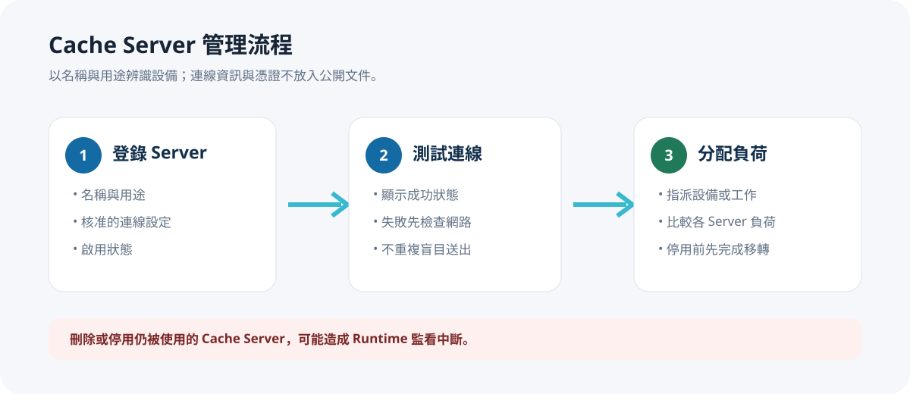
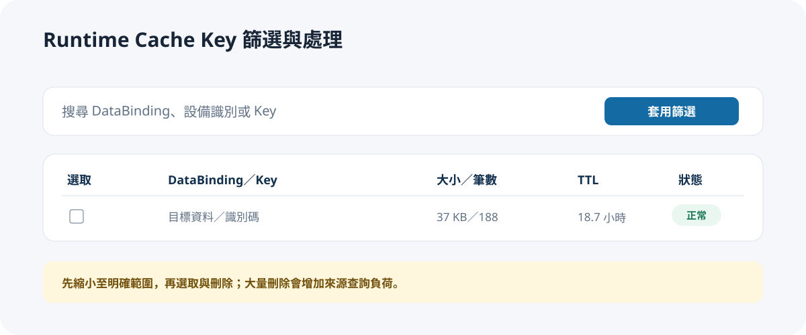
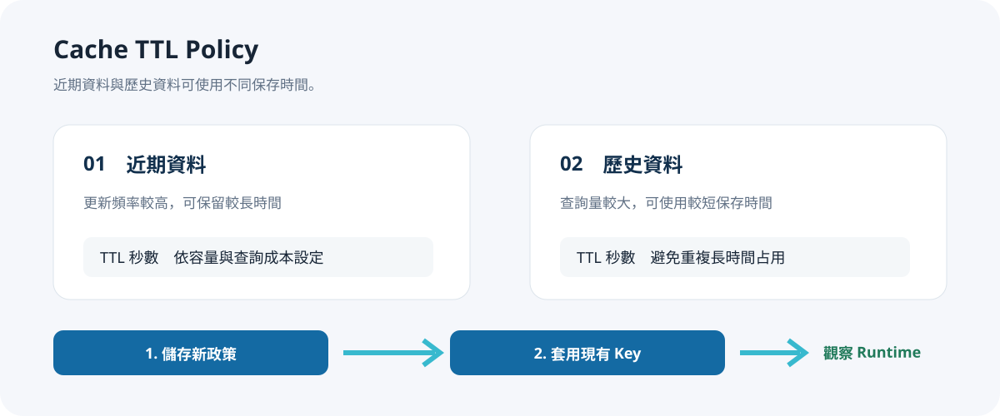
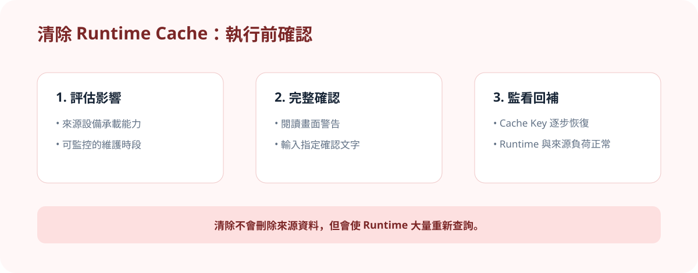

Cache Management 快取管理
管理 Runtime 快取設備、資料保存政策與健康狀態。多台 Cache Server 可分擔不同設備的執行負荷，提升監看服務的延展性。
查看 Cache 管理總覽
確認健康先處理連線或容量警示
選擇 Server查看該設備的 Key 與負荷
調整政策再處理 TTL 或選擇性清理
- 開啟「系統 → 快取管理」。
- 確認連線、記憶體、執行階段 Key、永久資料與命中率等摘要。
- 先處理健康警示，再進行 Key 或 TTL Policy 操作。
已辨識目前使用的 Cache Server、健康狀態及需處理的容量或 Key 問題。
對外說明以 Cache 能力與多設備負荷分流為主。
新增、編輯與刪除 Cache Server

- 名稱與說明
- 以承載設備、區域或用途命名，方便負荷分流。
- 連線設定
- 只輸入組織核准資訊，不在手冊或截圖留存憑證。
- 啟用狀態
- 啟用前先測試，停用前先移轉工作負荷。
- 進入 Cache Server 管理區。
- 新增時填寫可辨識的名稱與核准連線設定。
- 儲存後執行連線測試，再安排設備或工作負荷使用。
- 編輯或刪除前，先確認該 Server 承載的設備與 Runtime 影響。
Server 顯示為可用，且設備或工作負荷已依規劃分配。
刪除或停用仍被使用的 Cache Server 可能中斷即時監看；需先完成負荷移轉。
測試 Cache Server 連線
- 在 Server 清單選擇目標並點選連線測試。
- 確認成功訊息與回應狀態。
- 失敗時依序檢查名稱、網路可達性、認證及服務狀態。
測試顯示成功，Server 狀態可供後續 Cache 作業使用。
查看 Cache 狀態與拓樸
選定 Server避免把不同設備資料混在一起
比較負荷健康、記憶體、連線與 Key
調整分流將工作負荷移至合適設備
- 選擇目標 Cache Server。
- 查看健康狀態、記憶體、連線及拓樸資訊。
- 比較各 Server 負荷，判斷是否需要調整設備分流。
- 異常時記錄 Server 名稱、時間及指標，不公開實際連線資訊。
能說明每台 Cache Server 的角色、健康狀態與承載工作負荷。
搜尋與篩選 Runtime Cache Key

- 開啟 Key 瀏覽器。
- 輸入設備、圖面或資料識別條件並套用篩選。
- 核對 Key 類型、TTL 與更新狀態。
- 縮小至明確範圍後再進行選取或刪除。
清單只保留目標 Runtime 資料，且可辨識每筆 Key 的 TTL 與狀態。
刪除選取的 Runtime Cache Key
- 先以篩選找出目標並逐項核對。
- 選取 Key，點選刪除。
- 依畫面要求輸入確認文字後執行。
- 回到 Runtime 驗證資料已正常重新取得。
選取的 Key 已消失，Runtime 能從來源重新取得資料。
大量刪除可能短時間增加來源設備與服務負荷。
設定與套用 Cache TTL Policy

評估基準更新頻率、查詢成本與容量
儲存政策先影響後續新建或存取資料
套用現有 Key觀察命中率與 Runtime 回應
- 進入 TTL Policy，查看近期與歷史資料的保存秒數。
- 依更新頻率、查詢成本與記憶體容量評估新值。
- 儲存政策後，確認是否要套用至現有 Key。
- 套用完成後觀察命中率、記憶體與 Runtime 回應。
新政策已儲存；若已套用，現有 Key 的 TTL 亦符合設定。
較短 TTL 提高來源查詢量；較長 TTL 提高記憶體使用量。
清除 Runtime Cache

- 先確認影響範圍、服務時段及來源設備承載能力。
- 點選清除 Runtime Cache，閱讀警告。
- 依畫面要求輸入完整確認文字後執行。
- 清除後持續監看服務負荷、Cache 回補及 Runtime 畫面。
Cache 逐步回補，Runtime 恢復正常，來源服務未出現持續過載。
此操作不刪除來源資料，但會使 Runtime 大量重新查詢。只能由授權管理者在可監控的維護時段執行。